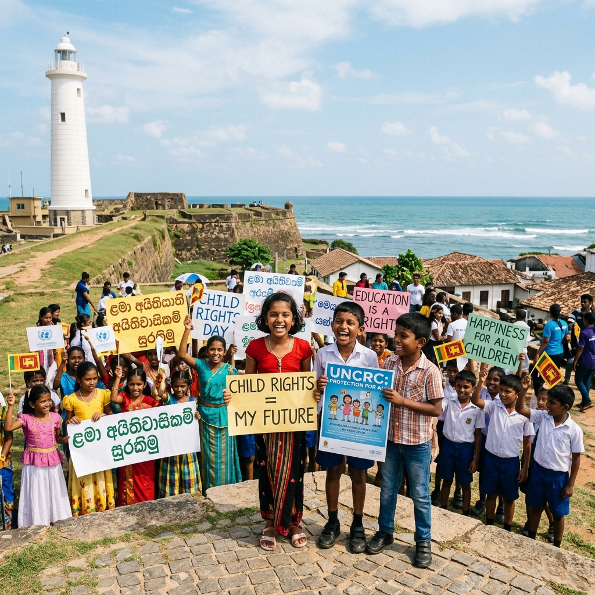
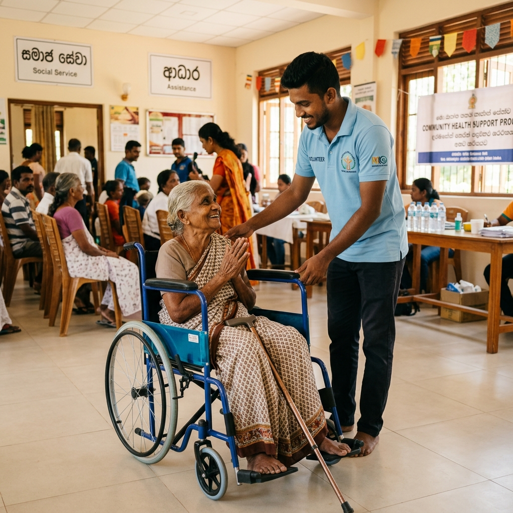
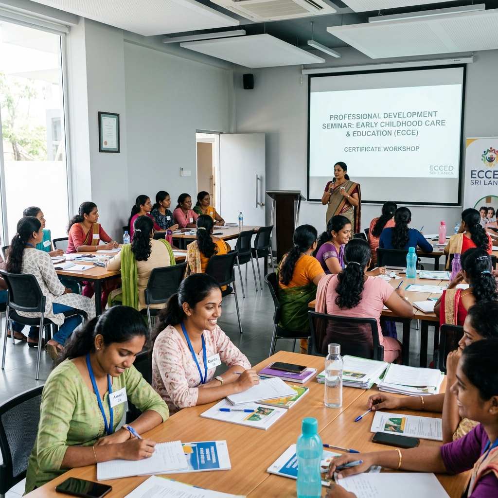

සුරක්ෂිත කළ දරුවන් Children Protected பாதுகாக்கப்பட்ட குழந்தைகள்
වැඩිහිටි නිවාස සංඛ්යාව Registered Elder Homes பதிவுசெய்யப்பட்ட முதியோர் இல்லங்கள்
ළමා සුරැකුම් මධ්යස්ථාන Daycare Centers சிறுவர் பராமரிப்பு நிலையங்கள்
ප්රතිලාභී පවුල් ප්රමාණය Beneficiary Families பயனடைந்த குடும்பங்கள்
ආයුබෝවන්! දකුණු පළාත් සමාජ සුබසාධන, පරිවාස හා ළමාරක්ෂක සේවා දෙපාර්තමේන්තුවේ නිල වෙබ් අඩවියට ඔබ සාදරයෙන් පිළිගනිමු. Welcome to the official web portal of the Department of Social Welfare, Probation, and Child Care Services of the Southern Province. தென் மாகாண சமூக நலன்புரி, நன்னடத்தை மற்றும் சிறுவர் பராமரிப்புச் சேவைகள் திணைக்களத்தின் உத்தியோகபூர்வ இணையத்தளத்திற்கு உங்களை வரவேற்கிறோம்.
අප දෙපාර්තමේන්තුව දකුණු පළාතේ සමාජීය රැකවරණය අවශ්ය වන ප්රජාව, විශේෂයෙන්ම අනාරක්ෂිත දරුවන්, ආබාධිත පුරවැසියන් සහ ජ්යෙෂ්ඨ වැඩිහිටියන්ගේ සුරක්ෂිතතාවය උදෙසා නීතිමය හා සුබසාධන සේවා රාශියක් ඉටුකරනු ලබයි. මෙම වෙබ් අඩවිය මඟින් අපගේ සියලුම සේවාවන් පිළිබඳ තොරතුරු සහ ඊට අදාළ අයදුම්පත් පහසුවෙන් ලබා ගැනීමට අවස්ථාව සලසා දී ඇත. Our department plays a pivotal role in implementing legal protection and welfare services for individuals requiring care, with a special emphasis on vulnerable children, disabled citizens, and elder welfare in the Southern Province. We aim to make our services transparent and readily accessible through this portal. தென் மாகாணத்தில் உள்ள பாதிக்கப்படக்கூடிய குழந்தைகள், மாற்றுத்திறனாளிகள் மற்றும் முதியோர்களின் நலனுக்காக சட்டப் பாதுகாப்பு மற்றும் சமூக உதவிச் சேவைகளை எமது திணைக்களம் முன்னெடுத்து வருகின்றது.
පළාත් කොමසාරිස්, සමාජ සුබසාධන, පරිවාස හා ළමාරක්ෂක සේවා Provincial Commissioner, Social Welfare, Probation & Child Care Services மாகாண ஆணையாளர், சமூக நலன்புரி, நன்னடத்தை மற்றும் சிறுவர் பராமரிப்புச் சேவைகள்
දෙපාර්තමේන්තුව මඟින් ප්රධාන අංශ තුනක් යටතේ ජනතාවට සහන සහ නීතිමය සේවා සපයයි. The department operates under three major pillars to secure and support the citizens of the Southern Province. தென் மாகாண மக்களுக்கு சேவைகளை வழங்குவதற்காக திணைக்களம் மூன்று முக்கிய பிரிவுகளின் கீழ் இயங்குகிறது.
අනාරක්ෂිත සහ අතහැර දැමූ දරුවන් ළමා නිවාස ගත කිරීම, පරිවාස පාලනය, නීතිමය උපකාර සහ දරුකමට හදාගැනීමේ ක්රියාවලිය අධීක්ෂණය කිරීම. Overseeing child adoption systems, monitoring childcare institutes, managing children under probation custody, and organizing child rights awareness programs. சிறுவர் தத்தெடுப்பு, சிறுவர் இல்லங்களை மேற்பார்வை செய்தல் மற்றும் நன்னடத்தைக் கண்காணிப்பு சேவைகளை வழங்குதல்.
විශේෂ අවශ්යතා සහිත තැනැත්තන්ට ආධාර, වෘත්තීය පුහුණු ශිෂ්යත්ව, වැඩිහිටි හැඳුනුම්පත් සැපයීම සහ ස්වයං රැකියා මූල්යාධාර ක්රියාත්මක කිරීම. Offering monthly disability aid, organizing vocational training grants, issuing elder ID cards, and allocating self-employment financial grants. மாற்றுத்திறனாளிகளுக்கான உதவித்தொகை, முதியோர் அடையாள அட்டை மற்றும் சுயதொழில் நிதியுதவிகளை வழங்குதல்.
දකුණු පළාතේ සියලුම ප්රාදේශීය ලේකම් කොට්ඨාශ මට්ටමින් ළමා හිමිකම් ප්රවර්ධන නිලධාරීන් සහ සුබසාධන නිලධාරීන්ගේ සේවා සම්බන්ධීකරණය. Direct community guidance, local counseling services, and home-based welfare checkups executed by divisional child-rights and social welfare officers. தென் மாகாண பிரதேச செயலக மட்டத்தில் சிறுவர் உரிமைகள் மேம்பாட்டு உத்தியோகத்தர்களின் சேவைகளை ஒருங்கிணைத்தல்.
ළමා අතවර, හිංසන හෝ වැඩිහිටි සුබසාධන ගැටලු සඳහා පැය 24 පුරා නොමිලේ ක්රියාත්මක වන අපගේ හදිසි දුරකථන සේවාවන් අමතන්න. Contact our toll-free 24/7 hotline service lines for reporting child protection issues or seeking elders welfare support directly. சிறுவர் விவகாரங்கள் அல்லது முதியோர் நலன் தொடர்பான புகார்களுக்கு எங்களின் அவசர தொலைபேசி சேவைகளை அழைக்கவும்.
දෙපාර්තමේන්තුවේ නවතම පුවත් සහ ඉදිරි වැඩසටහන් පිළිබඳව දැනුවත් වන්න. Keep up-to-date with our local community events, circular releases, and training programs. எமது திணைக்களத்தின் அண்மைய செய்திகள் மற்றும் வரவிருக்கும் நிகழ்வுகள் பற்றி அறியுங்கள்.

දකුණු පළාත් ළමුන්ගේ සහභාගීත්වයෙන් ළමා අයිතිවාසිකම් සුරැකීමේ විශේෂ වැඩසටහනක් ගාලු කොටුවේදී පැවැත්විණි. A provincial child-rights awareness campaign was successfully completed at Galle Fort with children's workshops. மாகாண மட்ட சிறுவர் உரிமைகள் விழிப்புணர்வு கருத்தரங்கு காலி கோட்டையில் வெற்றிகரமாக நடைபெற்றது.

පළාතේ ආබාධිත පුරවැසියන් සඳහා නොමිලේ රෝද පුටු සහ අනෙකුත් උපකරණ තෝරාගත් ප්රතිලාභීන්ට බෙදාදීම සිදු කරන ලදී. Special wheelchairs, walking aids, and hearing amplifiers were gifted to qualified disabled recipients. மாகாணத்திலுள்ள மாற்றுத்திறனாளிகளுக்கு சக்கர நாற்காலிகள் மற்றும் செவிப்புலன் கருவிகள் இலவசமாக வழங்கப்பட்டன.

ළමා සුරැකුම් මධ්යස්ථාන සේවිකාවන් සඳහා දෙදින පුහුණු හා සහතික පත්ර ප්රදානය කිරීමේ වැඩමුළුව සාර්ථකව අවසන් විය. A certified capacity-building session for local day-care center tutors and managers was held. மாகாணத்திலுள்ள சிறுவர் காப்பக ஊழியர்களுக்கான இருநாள் சான்றிதழ் விழிப்புணர்வு பயிற்சி வகுப்பு நிறைவுற்றது.